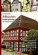

4. Veröffentlichung Bayer. Bautenschutz-Fachplanung, Geschäftsbereich Silicone, Wacker Chemie, Abt. Bayplan, München, kan læses i: Helmut Weber: "Fehlervermeidung, Sanierputzsysteme im Langzeiteinsatz unter erschwerten Bedingungen" bausubstanz April 1999:
"I de seneste årtier har man altid atter forsøgt at fjerne fugtbetinget murværks- og pudsskader med den varige supplerende tætnings foranstaltning med horisontal- og vertikalområdet.
Derved måtte man altid slå fast, at det kun på visse betingelser er muligt - som ofte i dag i almindelighed er bekendt - at mange af de synlige skader i fugt- og saltbelastet murværk i først og fremmest har virkning på tilbageførsel af saltene. Disse opløser sig i vand, vandrer gennem murværket og koncernentrerer sig der hvor de bedste fordampningsfelter er. Det fører så til mekaniske skader i puds- og murværksområderne gennem krystallisations- og hydrationseffekter på den ene side og en forhøjelse af fugtindholdet gennem hygroskopiske virkninger.

Gennem denne hygroskopiske vandoptagelse får fugtindholdet i vægen med varig indflydelse på de ugunstigste bevidstheder."
 Til afslutning:
Til afslutning:
Saneringsrepræsentanten og deres "brochurer" vil foreskrive injektions- og tætningsmørtel også foreslår saneringspuds som en hvis Dr.-Ing. Helmut Künzel sågar som eneste tilstrækkelige foranstaltning foreslår. Jeg vil dog tilråde en kritiserende analyse af dette supervåben, eksempelvis ved at offentliggøre disse fabelagtige "fede" saneringspuds-billeder.
Et efterskrift:
Til den historiske baggrund for saltbelastningen på byggeværker, facadepuds og facadeisoleringssystemer skriver Otto Krätz i SZ i weekenden 10.11.01 (S. I):
"Drastisk beskriver teknologen F. Knapp i 1847 de dengang ret storstilede hygiejniske vilkår med den opdagede salpeterdannelse.
"I stærkt befolkede byer i det smalle gader, hvor der lå ekskrementer fra trækdyrene, affald i rendestenen, skyllevand fra husene, affald fra markederne, hvor kød, fjerkræ og andre næringsmidler kunne købes, hvor disse og mange af den salgs ting med flydende indhold blev hældt ud og i vedvarende råddenskab sank ned, ser man hvordan mørtelpudsen ved foden af ydermuren (facaden) lidt efter lidt blev fortæret og overdækket med sneagtig, hvide, krystalliseringer som blæser ud og bliver kaldt "salpeteræde"
Stadig i det 18. århundrede benyttede den kurbayeriske armé den specielle rige ajlesprøjtende muresalpeter og mest huse uden kælder. Det soldat-støttede sendebud fra salpeterkommissionen overfaldte i morgengryet værgeløse gårde, rev gulvet ud og kradsede salpeter på. De bønder som ikke var begejstret for denne metode, havde med støtte fra kirken, at den mindste lille del fra stuen som kunne tjene til den religiøse andagt kunne blive forskånet. Gennem demonstrative og store arrangementer ved krucifiks, husaltre og helgenbilleder, kunne man holde salpeterkommissionen ude. Denne snughed begrundede til i dag, den vedvarende dybere fromhed fra det bayerske folk."
Det er næsten jyske forhold!!
Huset ligger i ..., og er bygget på lerjord, der jo indeholder meget fugt. ... Der er blevet gravet faskine (Omfangsdræn) rundt om huset, men kældervæggerne har saltudslip, pudsen fallder fra og der er skimmelsvamp.
Vi har fået mange "gode råd", men vi hved ikke hvad vi skal tro på? Nogen siger at pudsen skal væk, andre at der skal burre huller og fyldes op med et eller andet preparat.
Hvad mener du?
Med venlig hilsen XY
Mange tak for jeres forespørgsel. Disse problemer bliver jeg bestandigt stillet overfor. Jeg tager så hen til stedet (indtil nu helt til Nordfrisland) og beser situationen. Herefter findes frem til hvad kælderrummet skal benyttes til i fremtiden og hvordan behovene sammensættes ved en istandsættelse.
Hvorefter jeg kommer med mine tekniske anbefalinger som så til sidst fører til det ønskede resultat. Ofte er det letteste at gå frem skridt for skridt, hvor det så forsøges hvad som er den billigste metode for at nå frem til målet. Hvis det ikke er tilstrækkeligt, så må det næste skridt tages. Selvfølgelig kan man også med det samme vælge den store løsning, men det anbefaler jeg for det meste ikke.
Det afgørende spørgsmål er hvorfra fugten og salten kommer, og hvordan man standser kilden.
Men under alle omstændigheder vil jeres tilfælde ikke blive løst ved hjælp af afbankning af pudsen eller en eller anden kemikalieinjektion. Det koster kun meningsløst mange penge. Hvilket kan læses på min hjemmeside.
Hvis I ønsker det, så kan vi finde et tidspunkt hvor jeg kan komme og give min rådgivning. Det vil koste ca. 2500 Euro / 18.660 Dkr.
Et alternativ: I sender mig en cd eller email med billeder indenfor og udenfor samt plan og snittet af kælderen, samt drænet, hvor terrænet tydeligt er vist, og vedrørende kælderens fremtidige brug. Så prøver vi hvorvidt det er informationer nok for god rådgivning. For dette kræver jeg 400 Euro/ 2.990 Dkr, som bedes forudbetalt.
Venlig hilsen
Konrad
...